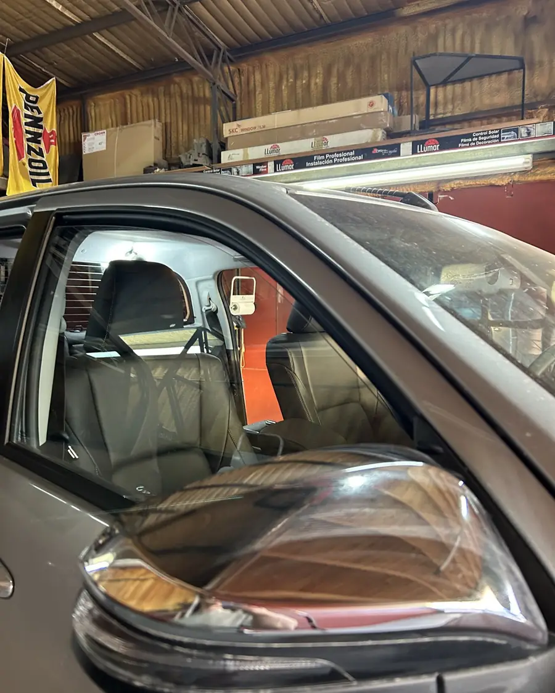
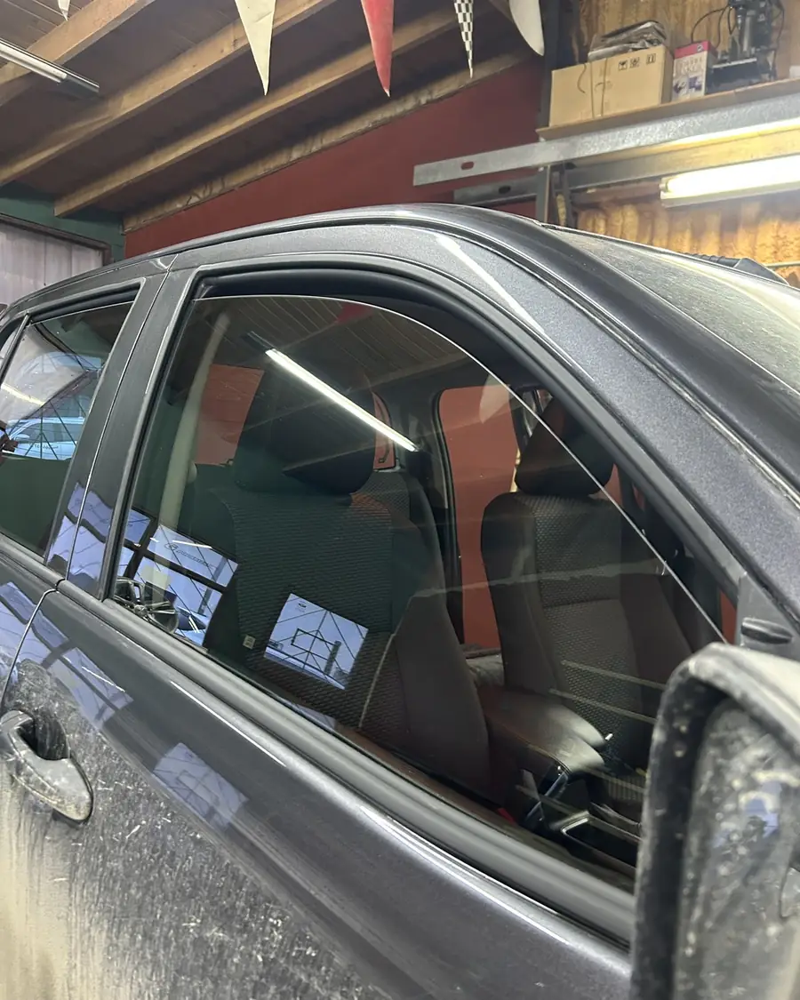
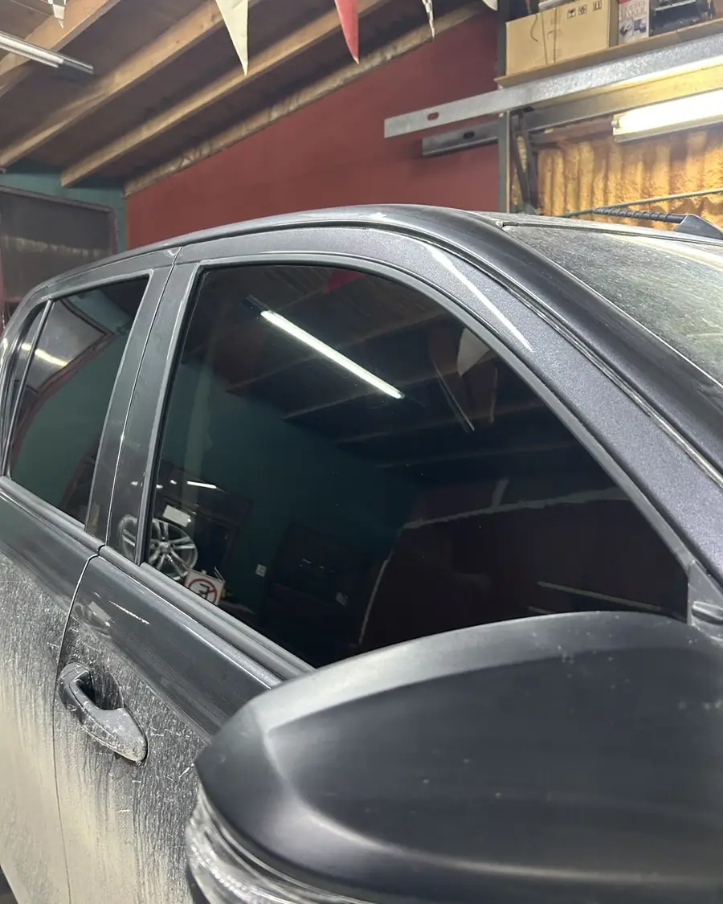
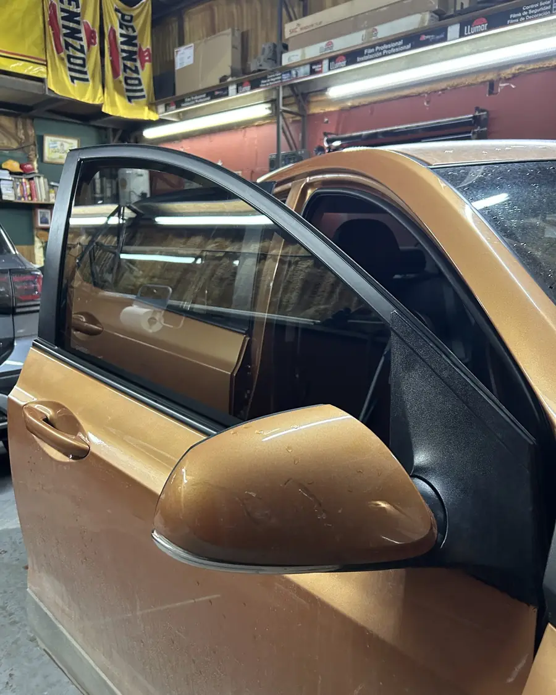
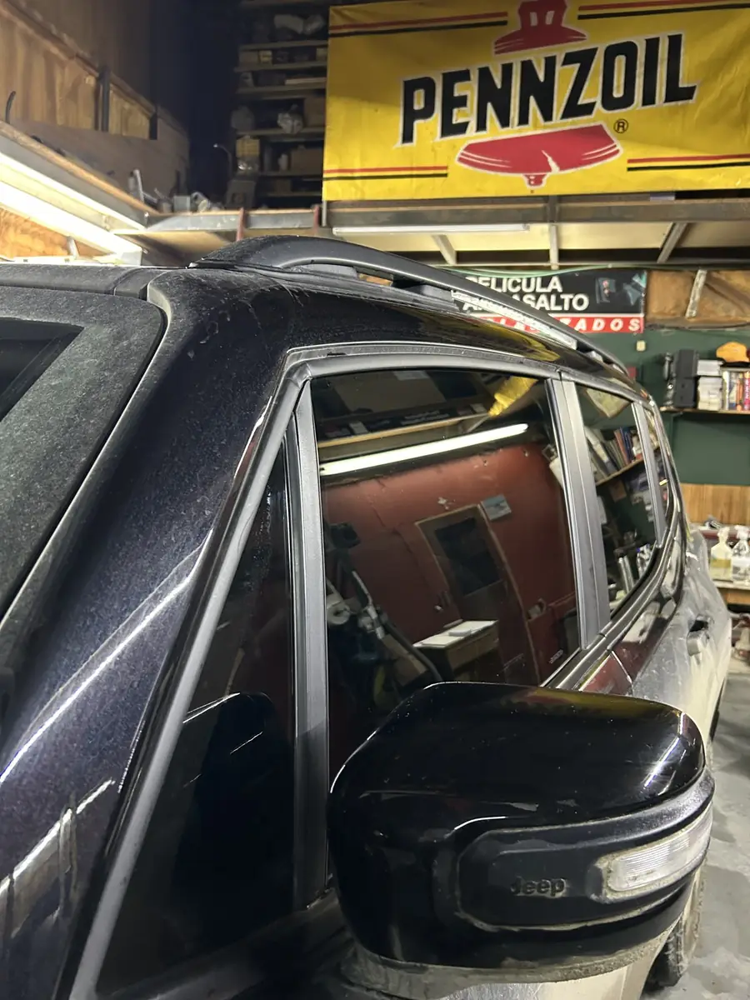

Polarizado en Ushuaia
Autos, camionetas, utilitarios, casas y comercios. Somos un taller familiar, el primero de polarizado de la ciudad, y trabajamos con turno.

Mirá la diferencia
Deslizá sobre cada foto. Son trabajos hechos en el taller, sin retoques.

 AntesDespués
AntesDespués


AntesDespués



Qué hacemos
Te asesoramos para elegir el tono que más te conviene según el uso que le das.
Polarizado de autos
Completo o solo algunos vidrios.
Camionetas y 4x4
Hilux, SW4, Amarok, Ranger y la que tengas.
Combis, utilitarios, camiones y colectivos
Vehículos de trabajo y de pasajeros.
Retiro de polarizado
Sacamos lámina vieja, burbujeada o descolorida.
Grabado de cristales
Grabamos los vidrios del vehículo.
Casas y comercios
Vidrieras, ventanas y oficinas.
Vení al taller
Juana Genoveva Fadul 431, Ushuaia

5,0de calificación en Google
Las reseñas las escriben clientes que pasaron por el taller.
Preguntas frecuentes
¿Cuánto sale?
Depende del vehículo y de los vidrios que quieras polarizar. Mandanos marca y modelo por WhatsApp y te pasamos el precio.
¿Cuánto tarda?
Un auto lleva alrededor de dos horas. Camionetas grandes, utilitarios y retiro de lámina vieja pueden llevar más; te lo decimos cuando pedís el turno.
¿Hay que traerlo lavado?
En lo posible, sí. Con el auto limpio hay menos polvillo cuando colocamos la lámina, y la terminación queda mejor. Si no llegaste a lavarlo, avisanos cuando pedís el turno.
¿Sacan polarizado viejo?
Sí. Si la lámina está burbujeada, rayada o descolorida, la retiramos y, si querés, te colocamos una nueva.
¿Polarizan casas y comercios?
Sí: vidrieras, ventanas y oficinas. Escribinos con las medidas aproximadas o una foto y te asesoramos.
Pedí tu turno
Escribinos con la marca y el modelo. Te pasamos el precio y el primer turno libre.
Escribir por WhatsApp